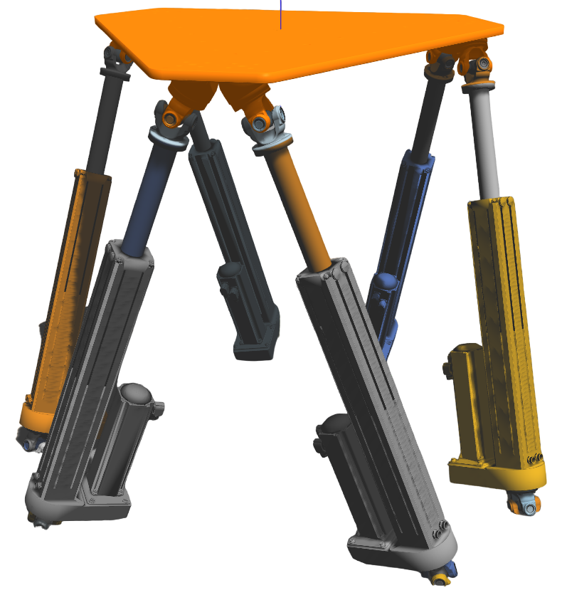

Détails concernant le projet
Il s'agit d'un projet effectué à l'Institut de Recherche de l'Ecole Navale dans le cadre d'un stage assistant ingénieur. Il s'agissait d'un stage de 4 mois (Août-décembre 2022). La plateforme concernée est une plateforme 6 axes de type Stewart-platform. En plus de ces 6 axes, l'hexapode possède deux plaques, une fixe et une mobile. Dans le cadre de ce projet, la première étape a été la modélisation de cette plateforme (voir ci dessous)

Dans la suite du projet, il a été nécessaire de trier et étudier les fichiers pièces afin de pouvoir créer
l'assemblage dans le logiciel Gazebo/ROS, un logiciel de simulation 3D open source.
Une fois cette modélisation effectuée dans le logiciel, j'ai eu l'occasion de créer les controlleurs de liaisons
ainsi qu'une interface afin d'envoyer les commande de rotation aux vérins. Dans cette interface, on renseigne l'angle de rotation selon
le roulis, le tangage et le lacet. Ces 3 valeurs de rotations vont ensuite être utilisées dans le calcul de longueur des vérins
qui va permettre de déduire la longueur de chaque vérin selon les valeurs de rotations et translations transmises a travers l'interface.
Il est possible d'observer le resultat final de se projet ci dessous :

Pour plus d'informations sur le projet : https://github.com/MaelysLupin/Stewart-platform